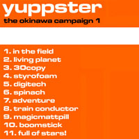

The Okinawa Campaign
Released by
8bitpeoples (8BP003) / 1999

Bring it back to '99 with this early 8BP release. I still enjoy some of these cuts. Most are pretty melodic, but a bit more tweaked out than my later stuff. It's mostly made with my now sold MC303 - some are recorded live, others touched up with the computer.